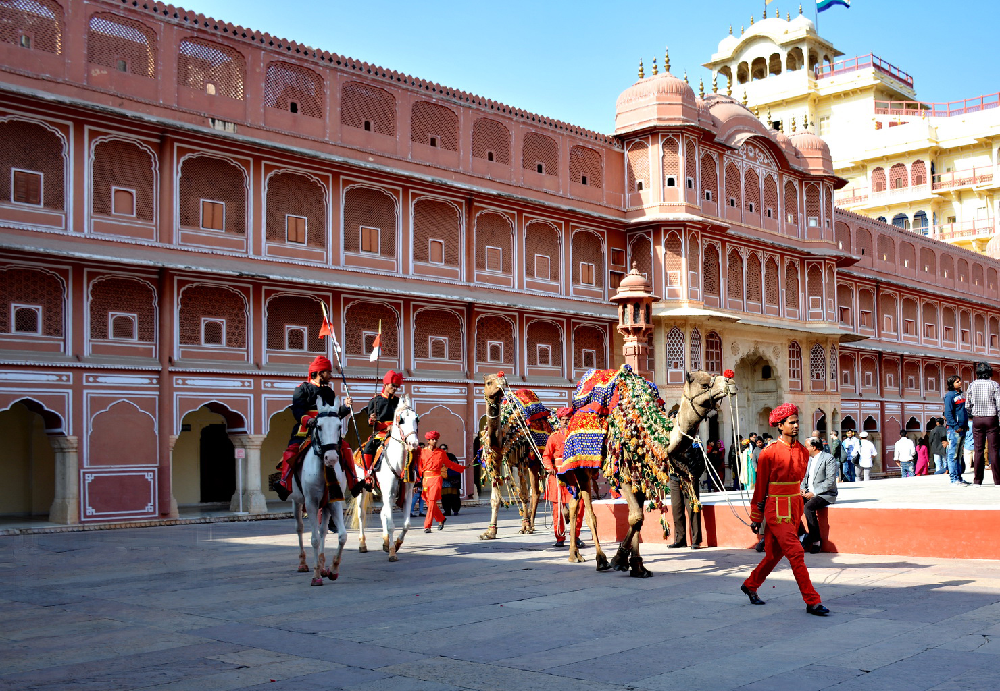
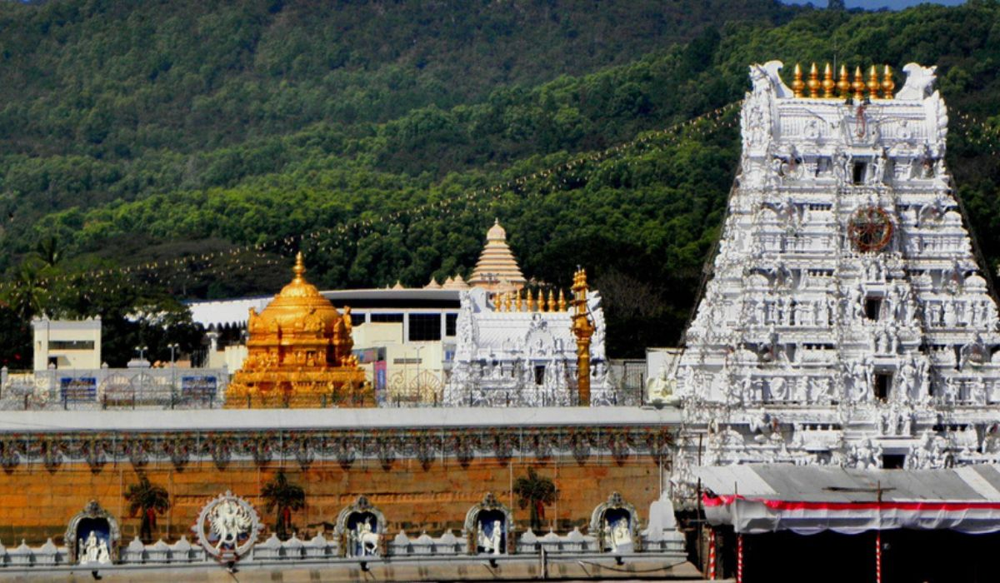

|  | Jaipur adds a dash of pink to the colorful state of Rajasthan. |
|---|---|
Kolkata, India's second biggest city, is a perpetually ongoing festival of human existence, |
|
 |
Popularly referred to as 'God's Own Country', Kerala in southwestern India |
 |
Lying on the western coast, Goa is India's smallest state and unlike any other, known for its endless beaches, stellar nightlife, eclectic seafood, world-heritage listed architecture. Spread across just 3,702 km, Goa lies in the Konkan region. It is a far cry from the hippie haven or a beach getaway, and one of the only few destinations that is open 24x7. The laid-backness (susegad) of Goa attracts as many international tourists as it does Indians, or even more. |
 |
Shimla is the capital of Himachal Pradesh and a popular hill-station among Indian families. |
DwarakaDwarka was the legendary capital |

TirumalaTirumala is a spiritual town in |
Goa beachGoa is a state on the southwestern coast |
kali-bari templeKali Bari Mandir is a Hindu temple |